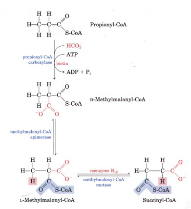
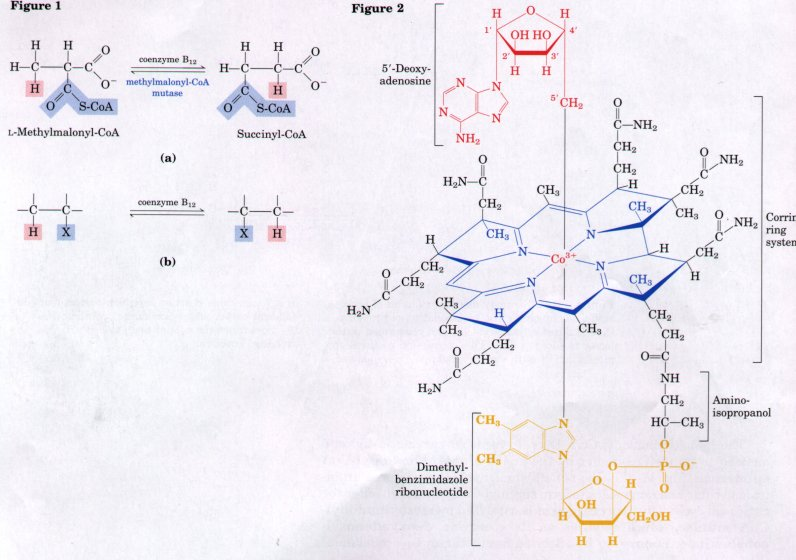
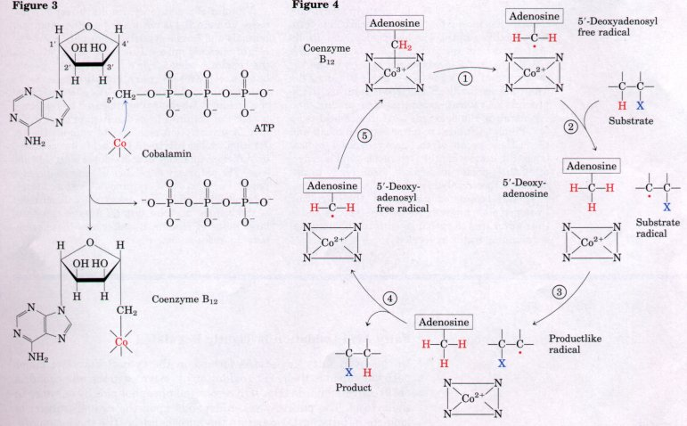
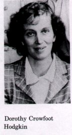
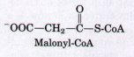
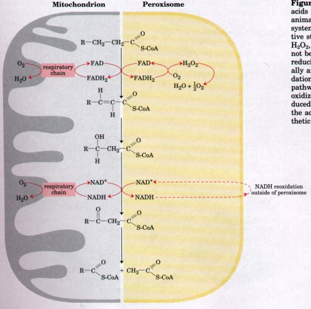
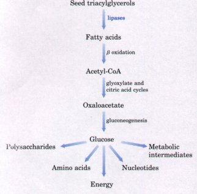
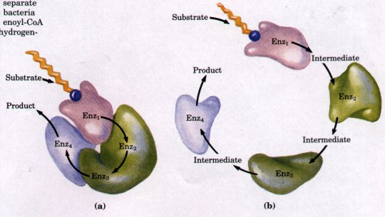

Although most naturally occurring lipids contain fatty acids with an even number of carbon atoms, fatty acids with an odd number of carbons are found in significant amounts in the lipids of many plants and some marine organisms. Small quantities of the three-carbon propionate (CH3-CH2-COO-) are added as a mold inhibitor to some breads and cereals, and thus propionate enters the human diet. Moreover, cattle and other ruminant animals form large amounts of propionate during fermentation of carbohydrates in the rumen. The propionate so formed is absorbed into the blood and oxidized by the liver and other tissues.
Long-chain odd-carbon fatty acids are oxidized by the same pathway as the even-carbon acids, beginning at the carboxyl end of the chain. However, the substrate for the last pass through the β-oxidation sequence is a fatty acyl-CoA in which the fatty acid has five carbon atoms. When this is oxidized and ultimately cleaved, the products are acetyl-CoA and propionyl-CoA. The acetyl-CoA is of course oxidized via the citric acid cycle, but propionyl-CoA takes a rather unusual enzymatic pathway, involving three enzymes. Propionyl-CoA is carboxylated to form the n stereoisomer of methylmalonyl-CoA (Fig. 16-12) by propionyl-CoA carboxylase, which contains the cofactor biotin. In this enzymatic reaction, as in the pyruvate carboxylase reaction (see Fig. 15-13), CO2 (or its hydrated ion, HCO3- ) is activated by attachment to biotin before its transfer to the propionate moiety. The formation of the carboxybiotin intermediate requires energy, which is provided by the cleavage of ATP to ADP and Pi.
 |
Figure 16-12 Strategy for the oxidation of propionyl-CoA, involving the carboxylation of propionyl-CoA to n-methylmalonyl-CoA and conversion of the latter to succinyl-CoA. This conversion requires epimerization of D- to L-methylmalonyl-CoA, followed by a remarkable reaction in which substituents on adjacent carbon atoms exchange positions; Box 16-2 describes the role of coenzyme B12 in this exchange reaction. The D-methylmalonyl-CoA thus formed is enzymatically epimerized to its L stereoisomer by the action of methylmalonyl-CoA epimerase (Fig. 16-12). The L-methylmalonyl-CoA undergoes an intramolecular rearrangement to form succinyl-CoA, which can enter the citric acid cycle. This rearrangement is catalyzed by methylmalonylCoA mutase, which requires as its coenzyme deoxyadenosylcobalamin, or coenzyme B12, derived from vitamin B12 (cobalamin) (Box 16-2). |
BOX 16-2Coenzyme B12: A Radical Solution to a Perplexing ProblemIn the methylmalonyl-CoA mutase reaction (see Fig. 16-12), the group -CO-S-CoA at C-2 of the original propionate exchanges position with a hydrogen atom at C-3 of the original propionate (Fig. la). Coenzyme B12 is the cofactor for this reaction, as it is for almost all enzymes that catalyze reactions of this general type (Fig. lb). These coenzyme Bl2-dependent reactions are among the very few enzymatic reactions in biology in which there is an exchange of an alkyl or substituted alkyl group (X) with a hydrogen atom of an adjacent carbon, with no mixing of the hydrogen atom transferred with the hydrogen of the solvent, H2O. How is it possible for the hydrogen atom to move between two carbons without mixing with the enormous excess of hydrogen atoms in the solvent? Coenzyme B12 is the cofactor form of vitamin B12, which is unique among all the vitamins in that it contains not only a complex organic molecule but also an essential trace element, cobalt. The complex corrin ring system of vitamin B12 (colored blue in Fig. 2), to which cobalt (as Co3+) is coordinated, is chemically related to the porphyrin ring system of heme and heme proteins (see Fig. 7-18). A fifth coordination position of cobalt is flled by a nucleotide we have not encountered before, dimethylbenzimidazole ribonucleotide (yellow), bound covalently by its 5'-phosphate group to one of the side chains of the corrin ring through aminoisopropanol.  Vitamin B12 as usually isolated is called cyanocobalamin because it contains a cyano group (picked up during purification) attached to cobalt in the sixth coordination position. In 5'-deoxyadenosylcobalamin, the cofactor for methylmalonyl-CoA mutase, the cyano group is replaced by the 5'-deoxyadenosyl group (red in Fig. 2), covalently bound through C-5' to the cobalt. The threedimensional structure of the cofactor was determined by x-ray crystallography by Dorothy Crowfoot Hodgkin in 1956. The formation of this complex cofactor (Fig. 3) is one of only two known cases in which triphosphate is cleaved from ATP; the other case is the formation of S-adenosylmethionine from ATP and methionine (see Fig. 17-20).  The key to understanding how coenzyme Blz catalyzes hydrogen exchange lies in the properties of the covalent bond between cobalt and C-5' of the deoxyadenosyl group (Fig. 2). This is a relatively weak bond; its bond dissociation energy is about 110 kJ/mol, compared with 348 kJ/mol for a typical C-C bond or 414 kJ/mol for a C-H bond. Merely illuminating the compound with visible light is enough to break this bond. (This extreme photolability probably accounts for the fact that plants do not contain vitamin B12.) Dissociation produces a 5'-deoxyadenosyl radical and the Co2+ form of the vitamin. The chemical function of 5'-deoxyadenosylcobalamin is to generate free radicals in this way, initiating a series of transformations such as that illustrated in Figure 4, a postulated mechanism for the reaction catalyzed by methylmalonyl-CoA mutase and a number of other coenzyme Blz-dependent transformations.  The enzyme iirst breaks the Co-C bond in the cofactor, leaving the coenzyme in its Co2+ form and producing the 5'-deoxyadenosyl free radical (step l ). This radical now abstracts a hydrogen atom from the substrate, converting the substrate to a radical and producing 5'-deoxyadenosine (step 2 ). Rearrangement of the substrate radical (step 3) yields another radical, in which the migrating group X (-CO-S-CoA for methylmalonyl-CoA mutase) has moved to the adjacent carbon to form a productlike radical. The hydrogen atom initially abstracted from the substrate is now part of the CH3- group of 5'-deoxyadenosine; one of the hydrogens from this same CH3- group (it can be the same one originally abstracted) is returned to the productlike radical, generating the product and regenerating the deoxyadenosyl free radical (step 4). Finally, the bond re-forms between cobalt and the CH2- group of the deoxyadenosyl radical (step 5 ), destroying the free radical and regenerating the cofactor in its Co3+ form, ready to undergo another catalytic cycle.In this postulated mechanism, the migrating hydrogen atom never exists as a free species and is thus never free to exchange with the hydrogen of surrounding water molecules. Vitamin B12 deficiency results in serious disease. Vitamin Bl2 is not made by either plants or animals and can be synthesized by only a few species of microorganisms. It is required in only minute amounts, about 3 μg/day, by healthy people, but the severe disease pernicious anemia results from failure to absorb vitamin B12 efficiently from the intestine, where it is synthesized by intestinal bacteria or obtained from digestion of meat in the diet. A glycoprotein essential to vitamin B12 absorption, called intrinsic factor, is not produced in sufficient quantity in individuals with this disease. The pathology in pernicious anemia includes reduced production of erythrocytes, reduced levels of hemoglobin, and severe, progressive impairment of the central nervous system. Administration of large doses of vitamin Bl2 alleviates these symptoms in at least some cases. |
In the liver, fatty acyl-CoAs formed in the cytosol have two major pathways open to them: (1) β oxidation by enzymes in the mitochondria or (2) conversion into triacylglycerols and phospholipids by enzymes in the cytosol. The pathway taken depends upon the rate of transfer of long-chain fatty acyl-CoAs into the mitochondria. The three-step process by which fatty acyl groups are carried from cytosolic fatty acylCoA into the mitochondrial matrix (Fig. 16-6) is rate-limiting for fatty acid oxidation. Once fatty acyl groups have entered the mitochondria, they are committed to oxidation to acetyl-CoA.

Two of the enzymes of β oxidation are also regulated by metabolites that signal energy sufficiency. When the [NADH]/[NAD+] ratio is high, β-hydroxyacyl-CoA dehydrogenase is inhibited; in addition, high concentrations of acetyl-CoA inhibit thiolase.
Although the major site of fatty acid oxidation in animal cells is the mitochondrial matrix, other compartments in certain cells also contain enzymes capable of oxidizing fatty acids to acetyl-CoA, by a pathway similar to, but not identical with, that in mitochondria. Peroxisomes are membrane-enclosed cellular compartments (see p. 38) in animals and plants, where hydrogen peroxide is produced by fatty acid oxidation and then destroyed enzymatically. As in the oxidation of fatty acids in mitochondria, the intermediates are coenzyme A derivatives, and the process consists of four steps (Fig. 16-13): (1) dehydrogenation; (2) addition of water to the resulting double bond; (3) oxidation of the β-hydroxyacyl-CoA to a ketone, and (4) thiolytic cleavage by coenzyme A. The difference between the peroxisomal and mitochondrial pathways is in the first step. In peroxisomes, the flavoprotein dehydrogenase that introduces the double bond passes electrons directly to O2, producing H2O2 (Fig. 16-13). This strong and potentially damaging oxidant is immediately cleaved to H2O and O2 by catalase. By contrast, in mitochondria the electrons removed in the first oxidation step pass through the respiratory chain to O2, and H2O is the product, a process accompanied by ATP synthesis. In peroxisomes, the energy released in the first oxidative step of fatty acid breakdown is dissipated as heat.
High concentrations of fats in the diet result in increased synthesis of the enzymes of peroxisomal β oxidation in mammalian liver. Liver peroxisomes do not contain the enzymes of the citric acid cycle and cannot catalyze the oxidation of acetyl-CoA to CO2. Instead, the acetate produced by fatty acid oxidation is exported from peroxisomes. Presumably some of this acetate enters mitochondria and is oxidized there.
 |
Figure 16-13 Comparison of β oxidation of fatty acids as it occurs in animal mitochondria and in animal and plant peroxisomes. The peroxisomal system differs in two respects: (1) in the first oxidative step electrons pass directly to O2, generating O22, and (2) the NADH formed in β oxidation cannot be reoxidized, and the peroxisome must export reducing equivalents to the cytosol. (These eventually are passed on to mitochondria.) Fatty acid oxidation in glyoxysomes occurs by the peroxisomal pathway. In mitochondria, acetyl-CoA is further oxidized via the citric acid cycle. Acetyl-CoA produced by peroxisomes and glyoxysomes is exported; the acetate from glyoxysomes serves as a biosynthetic precursor (see Fig. 16-14). |
| Fatty acid oxidation in plants occurs in
the peroxisomes of leaf tissue and the glyoxysomes of
germinating seeds. Plant peroxisomes and glyoxysomes are
similar in structure and function. Glyoxysomes occur only
during seed germination, and may be considered
specialized peroxisomes. In plants, the biological role of β oxidation in peroxisomes and glyoxysomes is clear: it provides biosynthetic precursors from stored lipids. The β-oxidation pathway is not an important source of metabolic energy in plants; in fact, plant mitochondria do not contain the enzymes of β oxidation. During germination, triacylglycerols stored in seeds are converted into glucose and a wide variety of essential metabolites (Fig. 16-14). Fatty acids released from triacylglycerols are activated to their coenzyme A derivatives and oxidized in glyoxysomes by the same four-step process that occurs in peroxisomes (Fig. 16-13). The acetyl-CoA produced is converted via the glyoxylate cycle (Chapter 15) to four-carbon precursors for gluconeogenesis (Chapter 19). Glyoxysomes, like peroxisomes, contain high concentrations of catalase, which converts the H2O2 produced by β oxidation to H2O and O2. |
 Figure 16-14 The role of β oxidation in the conversion of seed triacylglycerols into glucose in germinating seeds. |

Figure 16-15 A schematic diagram of the structure of the enzymes of β oxidation in gram-negative (a) and gram-positive (b) bacteria. The complex of four enzyme activities, two of which are part of a single polypeptide chain, is typical of gram-negative bacteria and is also found in the peroxisomal and glyoxysomal β-oxidation systems (a). The four enzymes of β oxidation in mitochondria are separate entities, similar to those of gram-positive bacteria (b). Enz1, acyl-CoA dehydrogenase; Enz2, enoyl-CoA hydratase; Enz3, L-β-hydroxyacyl-CoA dehydrogenase; Enz4, thiolase.
Although the β-oxidation reaction sequence in mitochondria is essentially the same as that in peroxisomes and glyoxysomes, the mitochondrial enzymes differ significantly from their isozymes in those compartments. These differences apparently reflect an evolutionary divergence that occurred very early, with the separation of gram-positive and gram-negative bacteria (see Fig. 2-6). In mitochondria, each of the four enzymes of β oxidation is a separate, soluble protein, similar in structure to the analogous enzyme in gram-positive bacteria. In contrast, the enzymes of peroxisomes and glyoxysomes are part of a complex of proteins, at least one of which contains two enzymatic activities in a single polypeptide chaih (Fig. 16-15). Enoyl-CoA hydratase and L-β-hydroxyacyl-CoA dehydrogenase activities both reside in a single, monomeric protein (Mr = 150,000), closely similar to the bifunctional protein of the gram-negative bacterium E. coli. The evolutionary selective value of retaining both types of β-oxidation system in the same organism is not yet apparent.